Pieszo z Hendaye do Lescun (2)
Część druga
Also available in English.
Dzień ósmy: 3 czerwca
Wstaję około godziny ósmej. W nocy jeszcze raz czy dwa razy budziły mnie gryzonie i musiałem interweniować, i bronić moich zapasów. Złażę z platformy i zbieram się w drogę. Pogoda jest dzisiaj trochę lepsza: kłębią się chmury, ale czasami wychodzi na kilka minut słońce.
Szlak wychodzi z doliny i biegnie ścieżką przez łąki na zielone grzbiety gór. Wszędzie pełno strumyków: gulgocze i szemra w nich lodowata woda. Przy jednym z nich spotykam czarno-żółtą salamandrę.
Po godzinie wspinaczki przystaję na chwilę i podziwiam widoki. Robię zdjęcie doliny. Po środku widać dom pasterza, a po prawej przy strumyku jest kamienna stodoła, w której gościły mnie myszy.
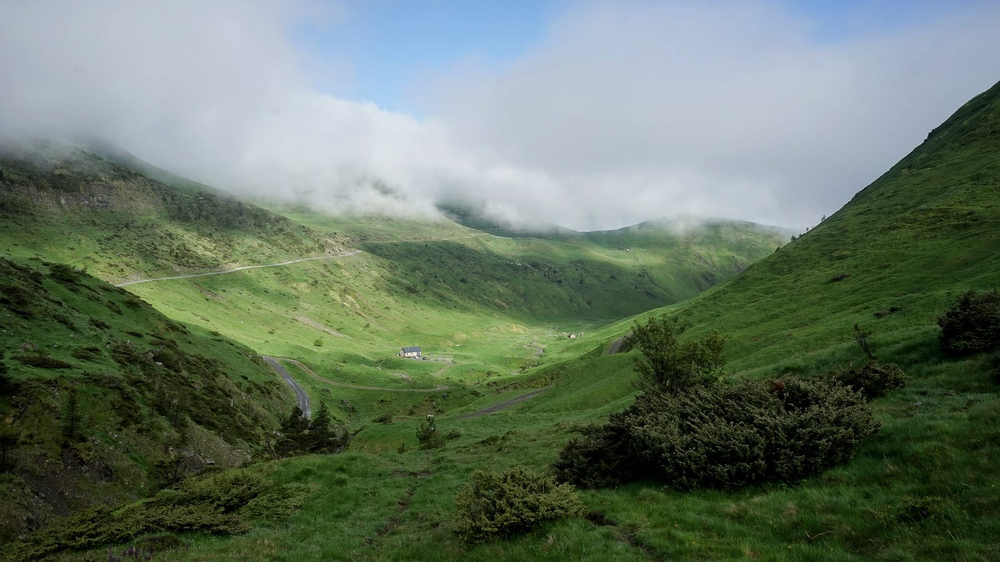
Idę dalej. Błękit nieba chwilowo zdobywa przewagę nad chmurami i otwierają się przede mną coraz to bardziej wysokogórskie panoramy. Potem, koło południa, chmury schodzą niżej i zmieniają się w mleczną mgłę. Napotykam tu też pierwsze płachty śniegu.
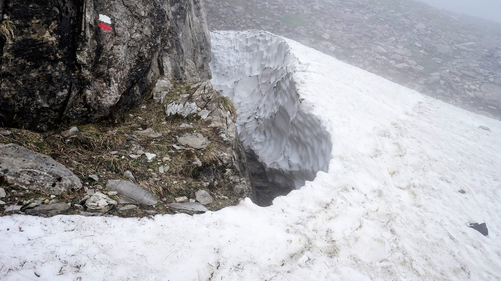
W pewnej chwili dobiega z bieli muzyka dzwonków, a potem wyłania się z niej stado owiec. Idą w przeciwnym od mojego kierunku, i dosyć szybkim krokiem, co nie jest w naturze owiec. Okazuje się, że nie są same, lecz prowadzone są na jakieś inne pastwisko przez parę pasterzy (mężczyznę i dziewczynkę). Za gładki przebieg tej operacji odpowiada spory pies.
Ścieżka prowadzi przez bardzo urozmaicony teren. Wskutek słabej widoczności, oglądam pejzaż jakby przefiltrowany przez wyobraźnię nadgorliwego reżysera: co kilka kroków wyłania się z pustki skałka ze skarłowaciałą sosenką, potem strumyk, potem łączka pełna obsypanych żółtymi kwiatami krzewów. Teraz znów skałka, sosenka, i tak w kółko w odmiennej tylko kolejności.
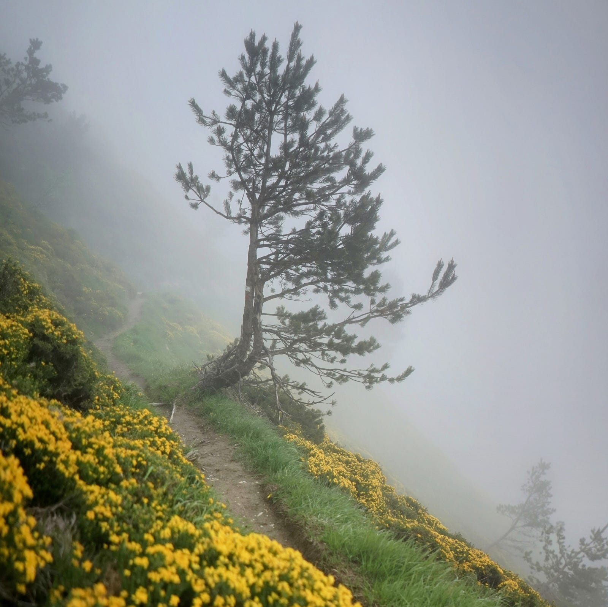
Po kilku kilometrach takiej wędrówki docieram do schroniska Belagua. To świeżo odnowiony spory budynek z błyszczącym blaszanym dachem. Sala jadalna ma duże okna z widokiem na góry, na jej środku pali się ogień w kominku. Prowadzi to schronisko sympatyczna młoda kobieta — mówi mi, że pochodzi z Katalonii. Zamawiam kawę i robię notatki z wydarzeń dnia.
Trochę czasu zabierają pertraktacje na temat tego, co ma być dla mnie na kolację. W zasadzie dla wszystkich ma być makaron i kiełbasa, ale ja mięsa nie chcę, więc dziewczyna wymyśla dla mnie różne inne opcje. W końcu oferuje usmażyć wegetariańskie hamburgery — nie jestem ich wielbicielem, ale w górach nie ma co grymasić, więc akceptuję.
Kolacja jest po siódmej. Do stołu siadamy wszyscy razem. Oprócz mnie jest jeszcze grupa czterech Basków z Donostii, którzy kończą już parodniową wycieczkę szlakiem jaskółek (Ruta de las Golondrinas). Nazywa się tak na cześć chodzących w czarnym odzieniu kobiet tutejszych, które na początku dwudziestego wieku co jesień przekraczały Pireneje w poszukiwaniu sezonowej pracy.
Poza baskijskimi turystami jest jeszcze dwóch leśników, którzy monitorują tu w górach florę w ciągu dnia, a w schronisku mają nocleg. Ostatni współbiesiadnik to mężczyzna około sześćdziesiątki — nie jestem pewny co tu tak właściwie robi, bo ma nietypowe akcent i rozumiem go tylko piąte przez dziesiąte. Z tym jegomościem — nazwijmy go Gorka, chociaż nie wiem, jak się naprawdę nazywa — już niedługo znów się spotkamy.
Jedzenie jest proste, ale smaczne, i kończę całą stertę moich wegeburgerów, a inni pałaszują grube kiełbasy.
Docierają teraz do schroniska turystki, które zgubiły gdzieś koleżankę. Dramat! Podobno szuka ich górska straż helikopterem. Brzęczą telefony, słychać pełne obaw rozmowy. Wszysto kończy się dobrze — turystkę lokalizują, jest bezpieczna.
Po kolacji gawędzę trochę ze starszym leśnikiem. Zazdroszczę mu jego niebiurkowej pracy w sercu Pirenejów.
Dzień dziewiąty: 4 czerwca
Dzisiaj wstaję wcześnie i o ósmej już jestem po śniadania. Robię szczegółowy plan trasy na następne 48 godzin. Na tym odcinku odbiegam znacznie od propozycji z przewodnika — gdy był pisany, schronisko Belagua było w remoncie, więc autor nie zaplanował w tej okolicy noclegu.
Mam zamiar przenocować dzisiaj w chatce górskiej Ansabère, po francuskiej stronie granicy. Droga do niej prowadzi najpierw szlakami GR12 i GRT13, a potem nieoznakowaną ścieżką do przełęczy Col de Pétragème. Stamtąd ma być zejście szlakiem Camille. Nazwa tej ścieżki pochodzi od imienia jednego z ostatnich rodzimych pirenejskich niedźwiedzi. Większość dzisiejszych tutejszych niedźwiedzi jest potomkami osobników sprowadzonych ze Słowenii w drugiej połowie lat dziewięćdziesiątych ubiegłego wieku. Tubylców czy imigrantów, jest ich tu raczej mało i nie ma za bardzo szansy ich spotkać. A więc w drogę.
Natura gór tutaj jest już odmienna od falująch zielenią wzgórz bardziej na zachód. Stoki są strome, a szczyty łyse, skaliste, miejscami pokryte płachtami stopniowo topniejącego śniegu. W wielu niższych miejscach w dolinach roztopowa woda tworzy tymczasowe jeziorka.
Pogoda jest słoneczna, krajobraz spektakularny. Maszeruję, chłonę widoki, i wdaję się w różnorakie niezakotwiczone w rzeczywistości fantazje na temat góralskiego życia.
Nie ma tu wielu ludzi, ale raz czy dwa razy widzę z daleka kilku turystów. A w pewnym momencie piechur idzie moją ścieżką w odwrotnym kierunku. Gdy już jesteśmy blisko, wydaje mi się znajomy. To Gorka. Przystajemy na chwilę, pyta mnie, gdzie idę. Wygląda na nieco zaskoczonego, gdy wyjaśniam, że chcę przejść przez przełęcz do chatki Ansabère — ostrzega, że może być trudno. No zobaczymy, mówię, i rozstajemy się.
Schodzę ze szlaku i podążam w górę wątłą, chwilami zanikającą ścieżyną. Jestem w domenie kozicy południowej, Rupicapra pyrenaica. Stadko idzie wąwozem poniżej, a ze skały po przeciwnej stronie dwa osobniki obserwują mnie uważnie.
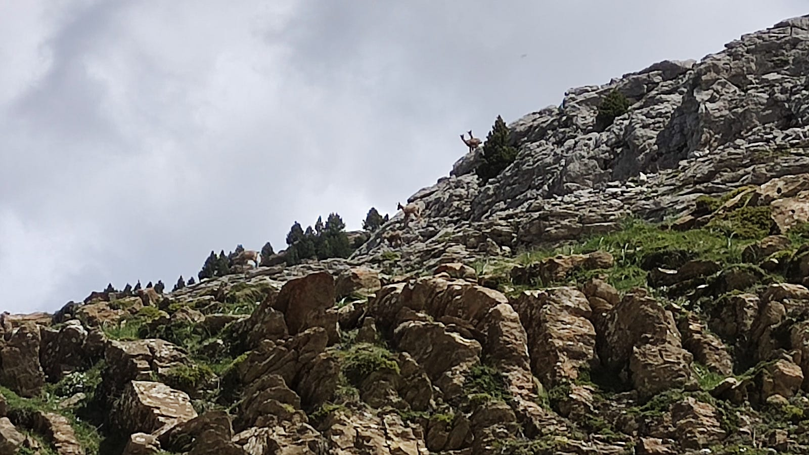
Oprócz kozic widać tu też, i słychać, wszędobylskie świstaki (Marmota marmota). Ich charakterystyczne gwizdy niewtajemniczonym łatwo byłoby wziąć za świergot ptaków.
Coraz więcej jest płacht i całych pól śnieżnych. Kiedy droga jest w miarę płaska, przejście przez nie jest bezproblemowe, nawet w niskich butach i bez raków. Jestem już na ścieżce Camille — oznaczona jest zielono-żółtymi paskami namalowanymi na kamieniach. Teren robi się skalisty i nierówny — czasami trzeba skakać ze skałki na skałkę. Pokonuję też osypiska z luźnych kamieni i żwiru, na których trudno o stabilność. Wkrótce dochodzę do miejsca, gdzie ścieżka zaczyna schodzić w dół, w stronę dzisiejszego noclegu. Robi się coraz stromiej i coraz śnieżniej, ale poniżej widać kuszącą zielenią rozległą doline, więc brnę dalej.
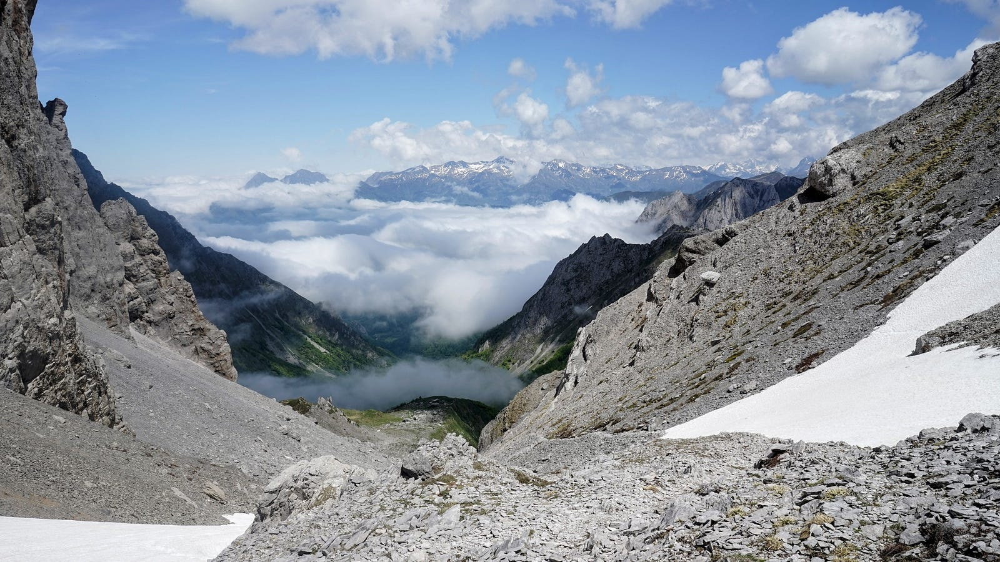
Rozglądam się dookoła szukając bezpieczniejszej okólnej drogi. Wydaje się jednak, że jedyna możliwość to zejście stromym polem śnieżnym na sam dół doliny. Nie widać dolnego brzegu tego śniegu: być może kończy się jeszcze większą stromizną lub przepaścią. Z pewnym uczuciem przegranej decyduję, że nie warto dalej ryzykować i zawracam, tylko 1,3 kilometra w linii prostej od celu. Słońce już od jakiegoś czasu się zniża — niedługo wieczór. Noc spędzę gdzieś tu niedaleko, trzeba tylko znaleźć płaskie, trawiaste miejsce. Wędruję przez jakiś czas stokiem, mniej więcej na zachód. Niedługo natykam się na małą łączkę wśród skał, a rośnie tam nawet sosenka. Rozbijam namiot. W szczelinach skalnych zalega wiele śniegu, który topię na wodę do picia w ciepłych jeszcze promieniach zachodzącego słońca. Wszędzie wokół otwarta przestrzeń i rozległe widoki na górskie szczyty.
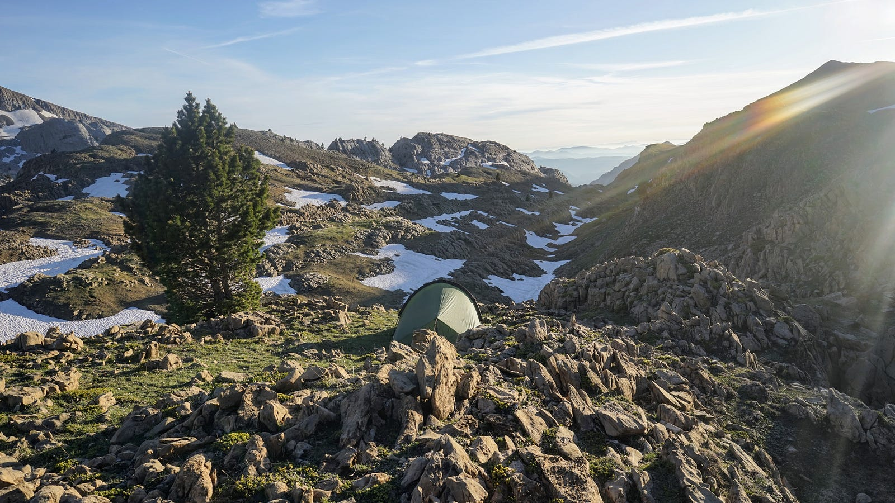
Przed snem idę jeszcze na mały spacer z aparatem. Myślę o tym, że dzisiejsza drobna porażki przerodziła się w pamiętną przygodę.
Dzień dziesiąty: 5 czerwca
Dzisiaj będę próbował przejść na francuską stronę inną przełęczą, parę kilometrów w linii prostej na północ. Można dojść tam przecinając rezerwat Larra, wzdłuż szlaków oznakowanych (GRT13 i GR12), a dalej ścieżką o nazwie Insole / Intzole. Droga najpierw prowadzi przez spiętrzone masy wapiennych skałek, częściowo porośniętych niskim laskem — teren bardzo interesujący, ale postęp jest wolny, bo trzeba patrzeć gdzie stawia się każdy krok. Pogoda jest słoneczna i wkrótce zaczyna się robić gorąco.
Około godziny dziesiątej siadam w cieniu na głazie i robię małą przerwę. Po chwili zauważam kilka kozic lawirujących pomiędzy skałami. Zjawia się ich coraz więcej. Są nieświadome mojej obecności i idą w moim kierunku. Po kilku minutach jest ich już kilkadziesiąt, z masą koźląt, a kilka z nich przechodzi ode mnie praktycznie na wyciągnięcie dłoni. Z bliska widać, że te zwierzęta rzeczywiście spokrewnione są z kozami. Z daleka przypominają bardziej sarny.
Ruszam dalej. Szlak prowadzi przez jakiś czas na zachód, w stronę schroniska Belagua. Widzę z daleka sylwetkę idącego stamtąd piechura. Po kilku minutach rozpoznaję Gorkę. Wychodzi na to, że nocuje w schronisku, a w ciągu dnia łazikuje po górach. Wyjaśniam, że nie udało się wczoraj zejście do chatki Ansabère i że będę probował ścieżką Insole. Mówi, że tam nie powinno być problemów. Zachęcony, żegnam się z Gorką i podążam dalej.
Szlak zaczyna wspinać się pod górę i przecina coraz więcej pól śnieżnych. Nie są zbyt strome i nie robią już na mnie takiego wrażenia jak wczoraj. Idę przez nie śmiało, uważając tylko by nie nastąpić na jakąś cienką warstwę lodu przekrywającego głęboką dziurę. Takich miejsc jest wiele, gdyż śnieg topnieje od spodu i robią się pod nim lodowe jamy. Chwilami gubię szlak, bo niektóre głazy ze znakami są pod śniegiem, i kluczę szukając właściwej ścieżki. Wszędzie wokół spoczywają imponujące ogromem stalowoszare cielska gór.
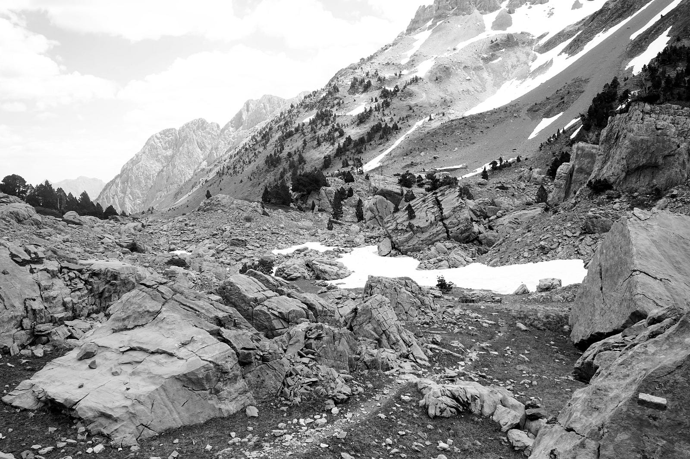
Z dala widzę pewnym krokiem poruszającego się po śniegu piechura. Gdy jesteśmy już obok siebie, po wymianie kilku zwrotów po hiszpańsku i francusku, okazuje się, że to Anglik więc przechodzimy na jego język. Widać, że to wędrowca starej szkoły, w znoszonych skórzanych buciorach, z papierową mapą i kompasem w dłoni, o zniszczonej słońcem i mrozem cerze. Mówi, że wędruje bez specjalnej trasy, chodząc znajomymi sobie ścieżkami i wspinając się na szczyty, jak i kiedy mu się zachce.
Po przebrnięciu przez jeszcze kilka pól śnieżnych, dochodzę do przełęczy. Zejście tędy okazuje się zupełnie łatwe i robię szybki postęp. Nocleg planuję dzisiaj przy źródłach Marmitou, gdzie według mojego przewodnika są dobre miejsca na biwak. Docieram tam zbyt wcześnie (krótko po czternastej), ale jest tu pięknie, i nigdzie się nie śpieszę, więc decyduję skończyć marsz na dzisiaj pomimo wczesnej pory. Jest to szeroka polana okrążona wysokimi szczytami, przecięta kilkoma strumykami i pokryta świeżą roślinnością. Jest też trochę skałek i drzew, są płaskie miejsca na namiot i kilka kręgów kamiennych po dawnych ogniska. Kładę się w cieniu i ucinam sobie małą drzemkę.
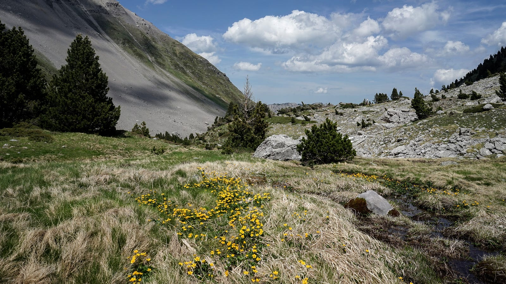
Budzą mnie po jakimś czasie czyjeś kroki. Zbliża się młody turysta i zagaduje. Okazuje się, że on też ma zamiar tu nocować, i że szedł dzisiaj ze schroniska Belagua. To chłopak z Anglii, nazywa się Loll, i jest na wakacjach po zrobieniu licencjatu i przed zaczęciem dalszych studiów. Ma jakiś skomplikowany plan przejścia przez cały HRP, ale z przerwą na spotkanie i poboczne wycieczki z rodziną czy też ze znajomymi. To trochę wczesny sezon na centralną część HRP, ale on ma przynajmniej mini-raki, więc może mu się udać.
Rozbijamy namioty po przeciwnych stronach strumienia. Wieczorem robimy ognisko w jednym z kamiennych kręgów, jemy kolację, i gadamy o tym i owym, a głównie wędrówce. On też nocował kilka dni temu w chatce Ardane, spotkał pasterza, i mimowolnie dzielił się jedzeniem z myszami.
Nazajutrz oboje mamy zamiar podążać do Lescun, i nocować tam w jednym z gîte d’etape. Nie planujemy iść tam razem, bo oboje wolimy być na trasie solo, idąc własnym tempem, i ciesząc się samotnością. Spotkamy się już na miejscu w miasteczku.
Dzień jedenasty: 6 czerwca
Budzę się wcześnie i najpierw robię kilka zdjęć krajobrazu w promieniach wczesnego słońca. Lśniący biało śnieg kontrastuje z jaskrawą trawą i z surową szarością skał. Wszędzie pełno wody, szemrzącej i błyskającej odbitym słońcem.
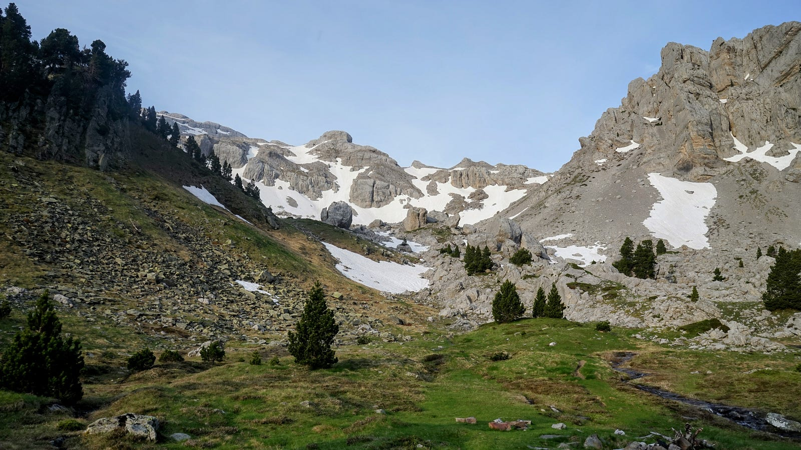
Namiot Lolla stoi, więc on pewnie jeszcze śpi. Ruszam w drogę. Ścieżka w kierunku Lescun prowadzi najpierw trawiastą doliną rzeczki Anaye z widokiem na masyw Pic d’Anie / Auñamendi, a potem schodzi stromo w dół, lasem do płaskowyżu Sanchèse. Idę szybkim krokiem i jestem na dole po jakichś dwóch godzinach marszu. Anaye tworzy tu spory wodospad. Odpoczywam i podziwiam tęczę w mgiełce powijającej spadającą wodę.
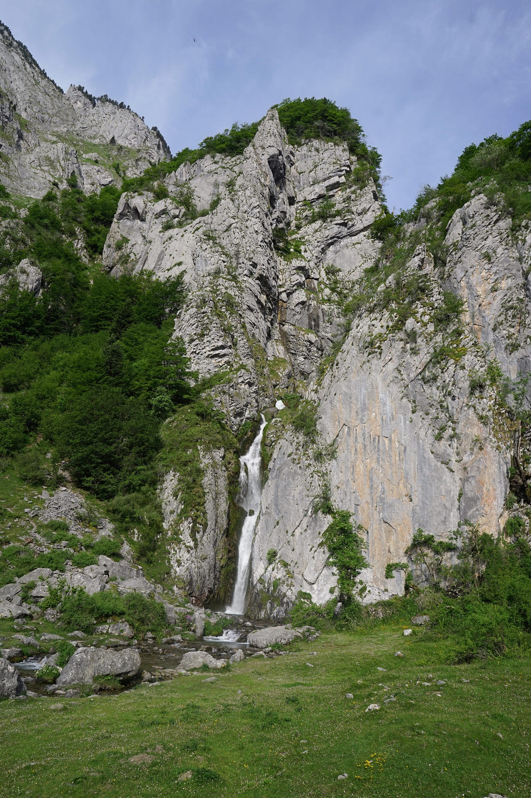
Jeszcze przed południem docieram do Lescun. Po drodze spotykam dwujęzyczne drogowskazy, ale tutaj miejscowy język to już nie baskijski tylko oksytański (zwany też prowansalskim). Jest to język romański spokrewniony blisko z katalońskim. Architektura też różni się od bielonych domów w kraju basków: tutaj domy budowane są z jasnoszarego kamienia a dachy pokryte ciemnymi dachówkami łupkowymi.
Lescun to malutkie miasteczko. Jest tutaj jeden sklep sprzedający wszystko, poczta, urząd miasta, biblioteka i kościół. Życie obraca się wokół turystyki pieszej: miejscowość ta jest bazą, gdzie zaczyna się (lub jak w moim przypadku kończy się) wiele pirenejskich szlaków.
W gîte d’etape, w którym będę nocował, moje łóżko nie jest jeszcze gotowe, więc zostawiam w recepcji plecak i idę do sklepu. Kupuję parę pamiątek dla rodziny i dla znajomych. Przy sklepiku jest kilka stolików, więc siadam i piję kawę i jem ciasto, i czytam.
Po dłuższym czasie dociera tu Loll. Narzeka na kolano, które boli i zmusza go do ostrożnego i powolnego chodu. Z taką kontuzją marsz trasą HRP nie będzie łatwy, więc postanawia odpocząć w Lescun przez kilka dni.
Po południu idę na mały spacer po miasteczku. Przy jednym z domów widzę, że oferują owczy ser, ale okazuje się, że obecnie go nie ma, bo w tej porze roku owce karmią właśnie jagnięta. Odwiedzam potem jeszcze sklepik z ceramiką, gdzie jakaś pani sprzedaje swoje rękodzieło i kupuję od niej jeszcze jedną pamiątkę.
Do wieczora głównie siedzę i czytam w jednej z dwóch kawiarni na skwerze. Przy sąsiednim stoliku słyszę polskie głosy — to para turystów. Gdy przechodzień zagaduje Polaka po francusku na temat jego czapki, pomagam im się dogadać. Gawędzimy potem przez kwadrans. Para przyjechała tu z zachodniego wybrzeża, bodajże ze Świnoujścia. Dziwią się, jak piękne i spokojne są Pireneje w porównaniu z bardziej znanymi w Polsce górami. Ja mam nadzieję, że takimi długo jeszcze pozostaną. Moja podróż dobiegła już prawie końca, ale zapoznałem się tylko z niewielką częścią trasy HRP, a najwyższe góry i najtrudniejsze odcinki znajdują się dalej na wschód. Zostaną na następny rok.
Kolacja jest w jadalni schroniska, jak zwykle przy wspólnym stole dla wszystkich gości. Siadamy razem z Lollem. Serwują nam bardzo proste, ale smaczne jedzenie: ryż i soczewica. Powoli rozkręca się rozmowa — w naszej części stołu siedzi dwóch chirurgów z jakiegoś miasta we Francji, Katalończyk z Barcelony podróżujący solo i dwóch Hiszpanów z Valladolid. Rozmowa przechodzi z francuskiego na hiszpański, z hiszpańskiego na angielski i z powrotem, w zależności, kto akurat do kogo się zwraca. Lolla włada jedynie angielskim i chwilami się nieco gubi. Hiszpanie z Valladolid planują jutro podążać scieżką Camille — relacjonuję im, że mnie ona pokonała i że może również dla nich być za dużo śniegu, bo również idą bez raków. Nie wydają się zbyt przekonani. Rozumiem ich — mnie też nie zawróciły ostrzeżenia Gorki.
Większość gości idzie wkrótce spać. Ja gadam jeszcze przez jakiś czas z Katalończykiem. Jest w dobrej formie fizycznej, ale już na emeryturze. Opowiada mi fragmenty historii swojego pierwszego małżeństwa. Twierdzi, że skończyło się ono w głównej mierze dlatego, że on zabrał swoją żonę na wspinaczkę w góry do Chile, na wysokość 6800 metrów n.p.m. — ta wspólna ekspedycja nie okazała się sukcesem dla pary. Teraz już jest starszy i mądrzejszy i na tego typu przygody wybiera się solo.
Żegnamy się. Idę przez placyk do budynku ze wspólną sypialnią. Jest już ciemno, a miasteczko powoli zasypia.
Epilog: 7 czerwca
Dzisiaj koło południa mam pociąd do Pau. Stacja kolejowa jest w Bedous, około 10 kilometrów szosą z Lescun. Pytam kobietę prowadzącą schronisko o ścieżkę pieszą — pokazuje mi drogę na mapie. To trochę więcej niż 10 km, ale nie trzeba wdychać spalin ani próbować autostopu. Ruszam w drogę.
Ścieżka wychodzi z miasteczka i prowadzi stokami łąkowych pagórków. Jest trochę mżawki i sporo chmur. W dolinach rozciągają się ławice mgieł, a wśród nich skupione ciasno domki Lescun.
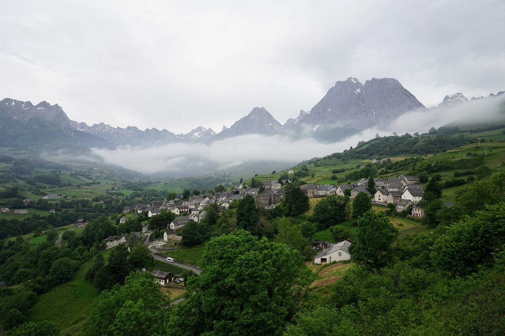
Droga zagłębia się w gęsty bukowy las. Na początku mijam paru turystów, ale teraz nie ma tu już nikogo. Ścieżkę blokują ogromne powalone niedawno drzewa — trzeba się przez nie trochę powspinać, żeby iść dalej. Następna przeszkoda to wartki strumyk, przez który ktoś przerzucił parę chybotliwych pni i przeciągnął linę mającą chyba służyć za poręcz. Przeskakuję z pnia na kamień, z kamienia na pień i jestem na drugim brzegu.
Po trzech godzinach dróżka zaczyna schodzić znów w dolinę — zbliżam się do Bedous. Idę przez senne obrzeża miasteczka i dochodzę do niewielkiej stacji. Jeszcze pół godziny do odjazdu pociągu. Zbierają się pasażerowie, górscy turyści. Pociąg jest malutki, coś w rodzaju przerośniętego tramwaju.
W Pau jadę spod stacji kolejką linowo-terenową na Bulwar Pirenejów. Nazwa pochodzi od widoku na góry. Są z tej odległości już tylko miniaturką, szarozieloną pofalowaną linią horyzontu. Odwracam się od panoramy i idę na miasto. Po kilku jeszcze godzinach spędzonych w tym miejscu pełnym pamiątek dawnej świetności, wsiądę do nocnego pociągu, który zabierze mnie do Paryża, a stamtąd dalej do Holandii, miejsca tak płaskiego, że góry wydawać się będą już tylko wytworem rozgorączkowanej wyobraźni.
Fin.